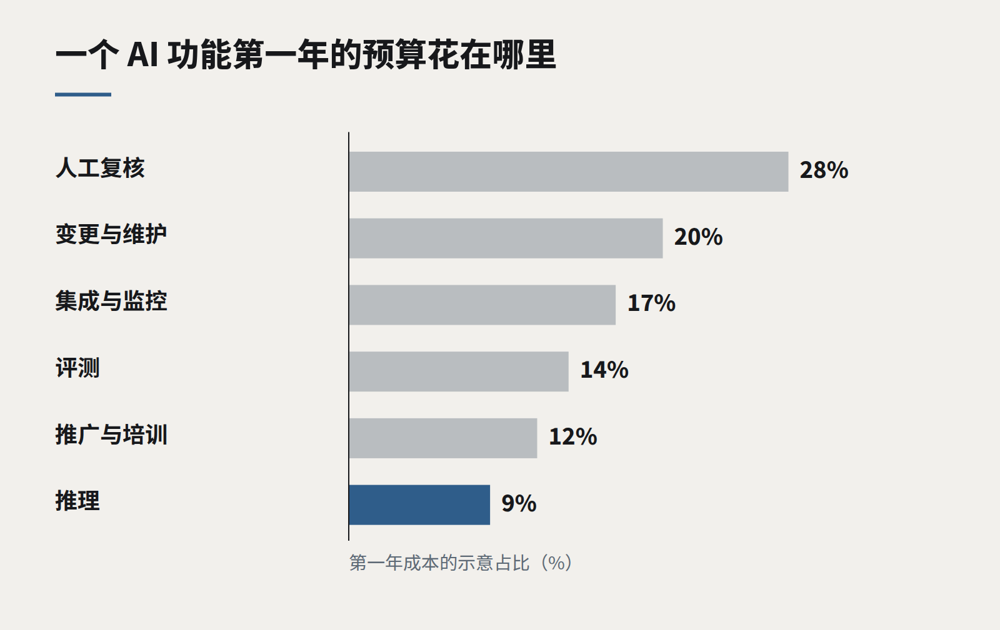

洞察
AI 与模型
一个 AI 功能的真实成本
token 账单是预算里最小的那一行。评测、人工复核、支持和变更管理，才是 AI 功能真正花钱的地方——也是商业论证应该最先看的地方。
当一份 AI 功能的商业论证送到我们手上时，成本部分通常只有一个算式：预计每月请求数乘以每次请求的价格。得出的数字往往小得让人安心。而以我们的经验，它大约只是把这个功能运行好所需实际成本的五分之一到十分之一。
这不是在反对 AI 功能，它们中的许多能数倍地收回成本。这是在呼吁诚实地估算它们，因为令人失望的项目很少是技术上失败的，而是那些运行成本从来没有被写进计划的项目。
完整的成本模型
我们把一个 AI 功能的成本拆成六行。
- 推理。 供应商的账单，或者自己托管模型的成本。要算上重试、加入检索上下文后比预想更长的提示词，以及遇到难题时回退到更大模型的费用。
- 评测。 建立并维护那套告诉你功能是否正常的样本集。这是持续性的：每一个新的失败都会变成一个新用例，而且得有人去标注。
- 人工复核。 对大多数业务用途来说，一部分输出需要人来检查——一开始是全部，后来是抽样。这些时间是真实存在的，应该列入预算。
- 集成与监控。 日志、看板、针对质量和成本的告警，以及把功能与它读写的系统连接起来的工程工作。
- 变更。 模型会更新，价格会变动，提示词需要调整。每个季度都要预留少量工程投入，仅仅是为了让功能保持现有质量。
- 推广。 培训、修订后的流程，以及在人们学会信任——以及学会正确地不信任——新工具期间增加的支持工作量。

钱通常花在哪里
在我们今年交付的功能里，推理通常是最小或第二小的一行。前六个月里，人工复核和变更占大头。评测是最常被原始估算漏掉的一项，而它的缺席，会在日后造成最昂贵的问题。
好消息是，其中几项成本会随时间下降。随着信心增加，复核从每条输出降到抽样；一旦样本集覆盖了主要失败模式，评测投入就会缩小；而在同等质量下，推理成本总体呈下降趋势。
给价值定价，而不只是给成本定价
完整的模型还需要账本的另一边，用同样的单位来表述：每月节省的工时，按真实的综合费率计算；避免的错误，及其典型损失；更快的响应或更高的转化带来的收入——如果能够衡量的话。把完整成本与一个实测的基线对比，决定就会变得直截了当——无论结论是做还是不做。
对任何 AI 商业论证都要问的问题
- 单次请求成本从何而来，是否包含了检索上下文和重试？
- 谁来复核输出，复核多少，持续多久？
- 谁来维护评测集，需要多少时间？
- 让功能保持最新的季度预算是多少？
- 它要改善的那个结果，今天的基线是多少？
如果这些答案都有，商业论证就准备好了。如果没有，那个醒目的数字只是一个猜测。
继续阅读
全部洞察